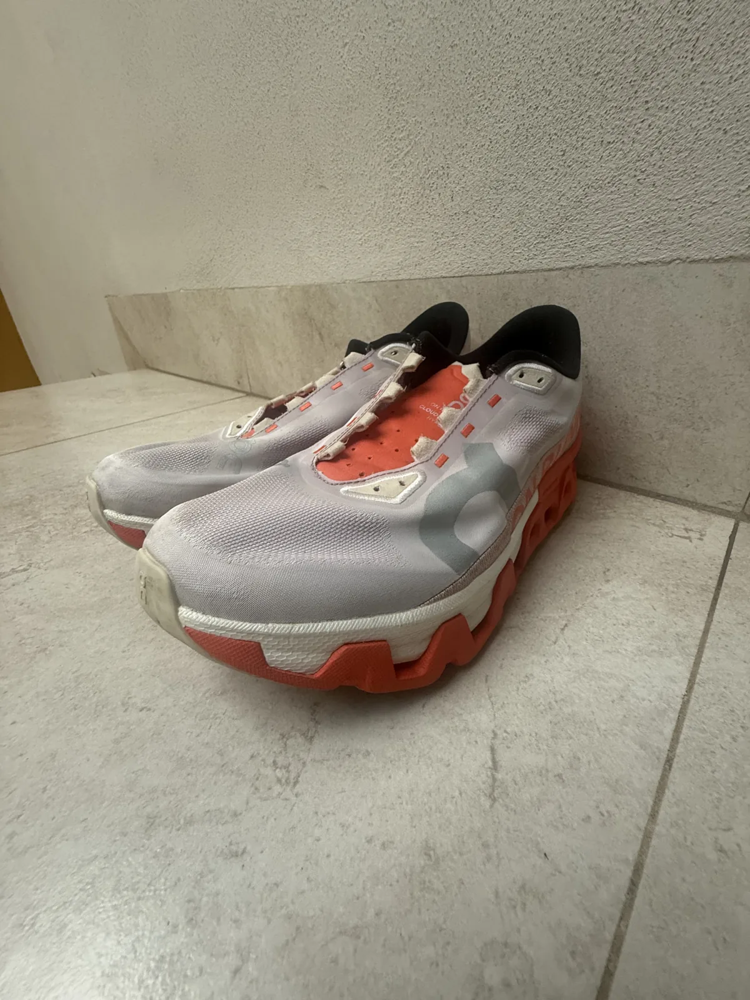
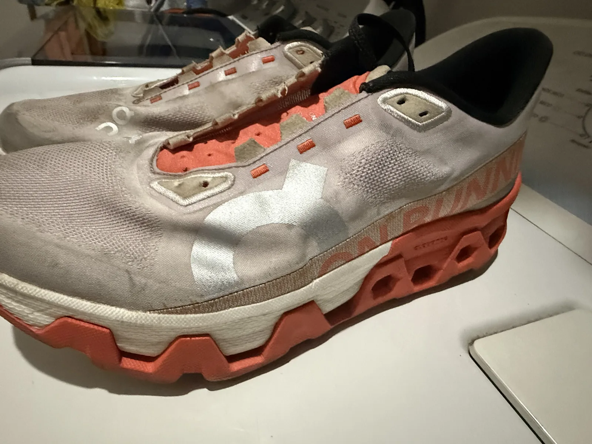

Escríbenos
Mándanos una foto de tus tenis por WhatsApp y cuéntanos qué necesitan.
LAVADO DE TENIS / SNEAKLAB
La calle deja huella. Nosotros nos encargamos de la limpieza. Dale una nueva vida a esos tenis que van contigo a todas partes.

ON CLOUD / DESPUÉS DEL LAVADO01 / EL CAMBIO SE VE
Tus tenis tienen más historias por vivir.
Estos son algunos pares que ya pasaron por Sneaklab.

ANTESFotos de nuestros trabajos. El resultado depende del material y del estado de cada par.
02 / ASÍ DE FÁCIL
Todo empieza con un mensaje.
Mándanos una foto de tus tenis por WhatsApp y cuéntanos qué necesitan.
Consulta disponibilidad y acuerda los detalles para entregar tu par.
Una nueva oportunidad para tus tenis favoritos. Lavado por $130 pesos.
TU PRÓXIMO PASO
Agenda tu lavado directamente con Sneaklab.
Escribir por WhatsApp477 802 1115ANTES DE AGENDAR
Presiona cualquier botón de WhatsApp. Se abrirá un mensaje listo para enviar a Sneaklab. Puedes adjuntar una foto de tu par para iniciar la conversación.
El lavado de tenis cuesta $130 pesos. Consulta por WhatsApp cualquier necesidad específica de tu par.
Escríbenos para confirmar el punto de entrega, la disponibilidad y el tiempo de lavado antes de llevar tu par.